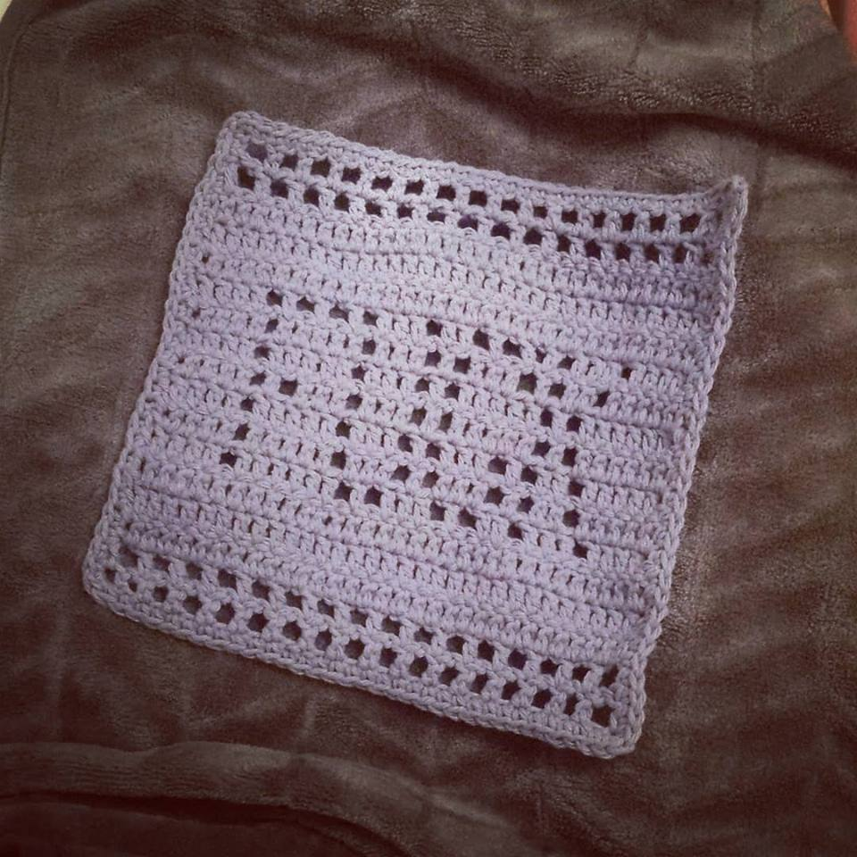
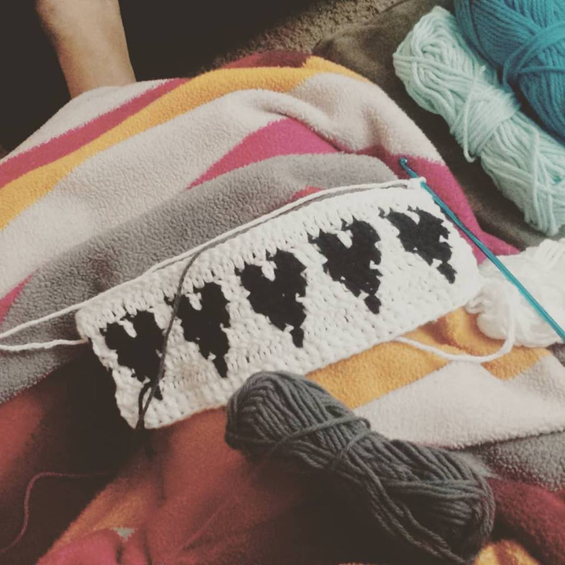
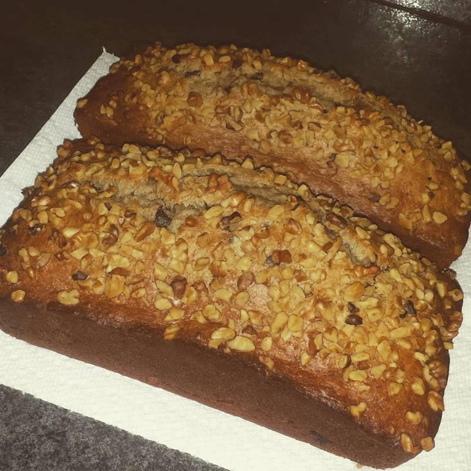
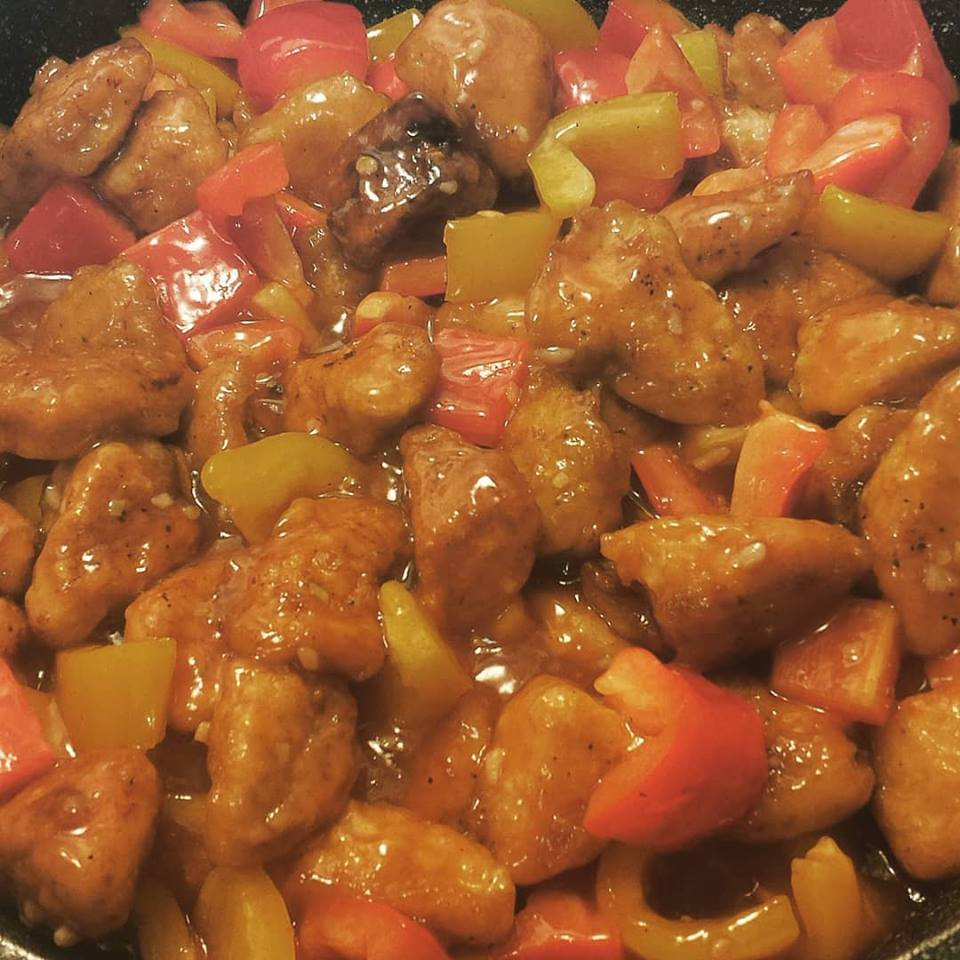

My name is Jennifer. Born and Raised in Terrace, BC. I am a student of Foundations in Innovations and Technology! I have a passion for cooking, baking and crafting. All of these things bring me comfort, knowing im making or cooking something that can bring someone comfort, makes me happy. I guess you can say its a nurtering characteristic of mine.
I often bake and crochet in my downtime or when I feel like something sweet. I often find all my ideas on Pinterest or The Pioneer Woman.
I have decided to share a few of my favorite recipes with you that I have found over the years. I will always go to these recipies. They are my utmost favorite! I hope you Enjoy them as much as I do!
I started Crocheting about a year ago, on a whim it really appealed to me how a bunch of knots and loops can become this cute little peice of art work! So far, in my year of learning. I've made a dozen dish cloths, one blanket started, and two toques. I guess you can say I've mastered making squares and rectangles! My passion for learning hasn't stopped there. I would like to learn more.
Crocheting for me has taught me how to be patient and also my eye and cordination has gotten better. It also calms me when I feel stressed or anxious. I'm a quick learner so learning a pattern is easy, I enjoy it very much.
 I'ma self taught baker, I take pride in knowing what I have baked can makes people tummies happy! I started baing at a young age. Like every little girls, I watched my Mom in the kitchen and she just facinated me. Like everyone else my Mothers cooking and baking is always the best. "There's no place like home!"
Banana Bread Recipie
Prep Time: 5 minutes
Cook Time: 15 minutes
Servings: 8
In a bowl, mix together the soy sauce, vinegar, brown sugar, oyster sauce, and sesame oil. set aside.
Heat the Vegetble oil in a large skillet over high heat and ass the chicken ina single layer. Sprinkle with a small amount of salt, then leave it alone for at least a couple minutes to give the chicken a chance to brown. when the chicken has turned golden, stir it around so that it can brown on all sides. Throw in the garlic and ginger and stir to combine. Stir in the bell pepper and let cook for 2 to 3 minutes.
While the pan is still hot, pour in the vinegar. Stir it around, scraping the bottom of the pan to loosen all the flavorful bits. Turn the heat to medium-low and pour in the saice mixture, then mix the cornstarch with 1/4 cup water to make a slurry and pour in. Stir the sauce for 1 to 2 minutes to thicken, then add the water chestnuts and cashews and stir to coat everything with the sauce, adding a splash of water if it is too thick.
Finally, sprinkle on the green onions. Serve with cooked rice.
Enjoy!